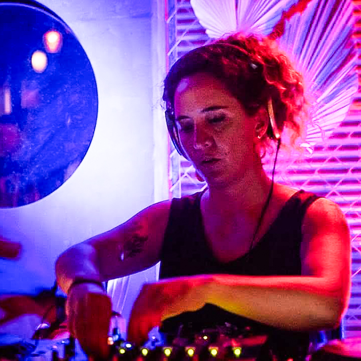

Biografía
DJ y Fotógrafa cordobesa. Me enamoré de la música electrónica de muy chica, cuando llegaron a mis manos grabaciones de legendarios como Pete Tong, Paul Oakenfold, Sasha, entre otros; y a escuchar talentos locales en los primeros clubs electrónicos de Córdoba.

Actualmente navego como dj en los géneros House, Deep House, Organic y Downtempo principalmente.
Mis sets comparten sonidos con otros estilos musicales, y acompañan tanto momentos de relax como animadas
pistas de baile.
Conecto con la música desde el placer, y como forma de vida.
Mi formación como fotógrafa y artista visual me permite disfrutar de la música como paisaje sonoro en el
cual adentrarme y viajar.
Desde el año 2018 me dedico con todo a la profesión de DJing.
Estoy formándome como productora musical.